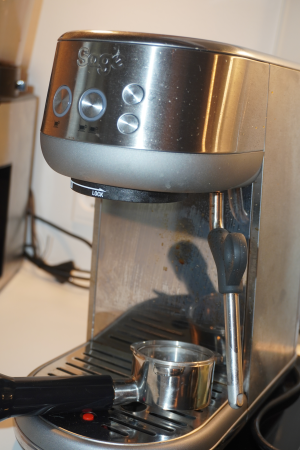

Sage Bambino

Seriøs espresso: Dette er muliggjort af formlen med 4 nøglefunktioner. Den leverer ydeevne i barista -kvalitet ved hjælp af et 54mm portafilter med 19 gram kaffe for den fulde smag og en kraftig steamer-arm til at skabe den mikroskum, der kræves til latte-art.
Denne manuelle espressomaskine er et godt bud på en espressomaskine til nye baristaer, da den har få knapper til betjening, fylder minimalt i køkkenet og er utrolig god til prisen.
Kun udstyret med fire knapper er brugeroplevelsen overkommelig, og ikonerne viser dig, hvad du skal trykke på.
Sage Bambino kan købes hos mange online-butikker blandt andet hos eller til 3.000 kr.